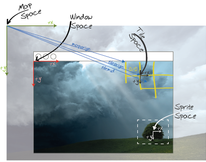

Package gdi.game.map
Class Map
java.lang.Object
gdi.game.map.Map
- Direct Known Subclasses:
gdi.game.map.ArrayMap
public abstract class Map
extends Object
implements gdi.game.DrawableObject, gdi.game.UpdatableObject, Iterable<MapTile>
A map is a representation of a regular 2D-grid that is overlaid on top of a world in
MapWorld and all its
derived classes. This class defines the interface all Maps have to provide to the parent MapWorld and adds a
few implementations for some basic methods.- Version:
- 1.0
- Author:
- frank
-
Constructor Summary
Constructors -
Method Summary
Modifier and TypeMethodDescriptionfinal intReturns the number of columns available on this mapabstract intThe height (in pixels) of the mapfinal MapWorldReturns theMapWorldthat hosts this mapabstract gdi.util.math.Vec2DA map can be placed relative to the encapsulatingMapWorldand its map-space.final intgetRows()Returns the number of rows available on this mapabstract MapTilegetTile(int col, int row) Returns theMapTilerepresenting the specified row/column (not pixels!)abstract MapTilegetTileAtPixel(double x, double y) Returns theMapTilethat contains the pixel (specified in map-Space).getTileAtPixel(gdi.util.math.Vec2D v) Returns theMapTilethat contains the pixel (specified in map-Space).abstract intThe height of a single tile on the map.abstract gdi.util.math.Vec2DgetTileMid(int col, int row) The mid point of the tile at the specified row/column (not pixels!).final gdi.util.math.Vec2DReturns the mid point of the passed tile.abstract gdi.util.math.Vec2DgetTileOrigin(int col, int row) The origin of the tile at the specified row/column (not pixels!).final gdi.util.math.Vec2DReturns the origin of the passed tile.abstract intThe width of a single tile on the map.abstract intgetWidth()The width (in pixels) of the mapabstract booleanisValid(int col, int row) Tests whether or not the passed row/col combination is inside the griditerator()Methods inherited from class java.lang.Object
equals, getClass, hashCode, notify, notifyAll, toString, wait, wait, waitMethods inherited from interface gdi.game.DrawableObject
renderMethods inherited from interface java.lang.Iterable
forEach, spliteratorMethods inherited from interface gdi.game.UpdatableObject
update
-
Constructor Details
-
Map
public Map(int cols, int rows) Creates a new map of the given size- Parameters:
cols- The number of columns the map should haverows- The number of rows the map should have
-
-
Method Details
-
isValid
public abstract boolean isValid(int col, int row) Tests whether or not the passed row/col combination is inside the grid- Parameters:
col- The column to testrow- The row to test- Returns:
truewhen the combination refers to a valid gird cell
-
getOrigin
public abstract gdi.util.math.Vec2D getOrigin()A map can be placed relative to the encapsulatingMapWorldand its map-space. This defines the offset between the origin of the map-space and the map- Returns:
- The origin of the map in map-space coordinates
-
getWidth
public abstract int getWidth()The width (in pixels) of the map- Returns:
- The width (in pixels) of the map
-
getHeight
public abstract int getHeight()The height (in pixels) of the map- Returns:
- The height (in pixels) of the map
-
getTileWidth
public abstract int getTileWidth()The width of a single tile on the map.- Returns:
- The width of one tile
-
getTileHeight
public abstract int getTileHeight()The height of a single tile on the map.- Returns:
- The height of one tile
-
getTileOrigin
public abstract gdi.util.math.Vec2D getTileOrigin(int col, int row) The origin of the tile at the specified row/column (not pixels!). The origin is the pixel-coordinate of the top/left corner of a tile. The following image depicts the origin of an individual tile. Do not confuse this with the origin of the entire map. The Tile-origin is the origin of the Tile-Space in Map-Space coordinates:
- Parameters:
col- The column of the tilerow- The row of the tile- Returns:
- The origin of the tile found at the specified grid position.
-
getTileMid
public abstract gdi.util.math.Vec2D getTileMid(int col, int row) The mid point of the tile at the specified row/column (not pixels!). The following image depicts the origin of an individual tile. Do not confuse this with the origin of the entire map. The Tiles mid-point is the middle of the tile in Tile-Space expressed in Map-Space coordinates:
- Parameters:
col- The column of the tilerow- The row of the tile- Returns:
- The center of the tile found at the specified grid position or
null
-
getTile
Returns theMapTilerepresenting the specified row/column (not pixels!)- Parameters:
col- The column of the tilerow- The row of the tile- Returns:
- The tile stored at the specified grid position
-
getTileAtPixel
Returns theMapTilethat contains the pixel (specified in map-Space).- Parameters:
x- The x-position in map-space-pixelsy- The y-position in map-space-pixels- Returns:
nullor the tile that resides below the specified coordinate
-
getTileAtPixel
Returns theMapTilethat contains the pixel (specified in map-Space).- Parameters:
v- The location of the Pixel in map-space-pixels- Returns:
nullor the tile that resides below the specified coordinate
-
getTileOrigin
Returns the origin of the passed tile. Please refer togetTileOrigin(int, int)for details.- Parameters:
t- The tile whose origin you want to read.- Returns:
- The origin of the tile or
null - See Also:
-
getTileMid
Returns the mid point of the passed tile. Please refer togetTileMid(int, int)for details.- Parameters:
t- The tile whose mid point you want to read.- Returns:
- The mid-point of the tile or
null - See Also:
-
getRows
public final int getRows()Returns the number of rows available on this map- Returns:
- Number of rows
-
getColumns
public final int getColumns()Returns the number of columns available on this map- Returns:
- Number of columns
-
getMapWorld
Returns theMapWorldthat hosts this map- Returns:
- The parent
MapWorld
-
iterator
-